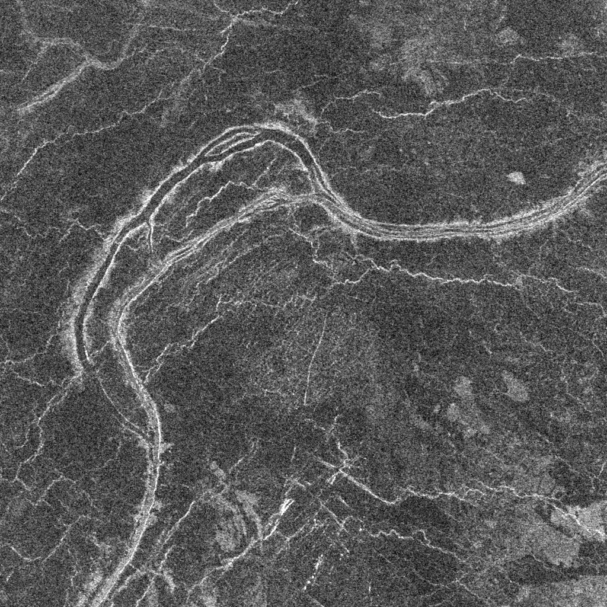
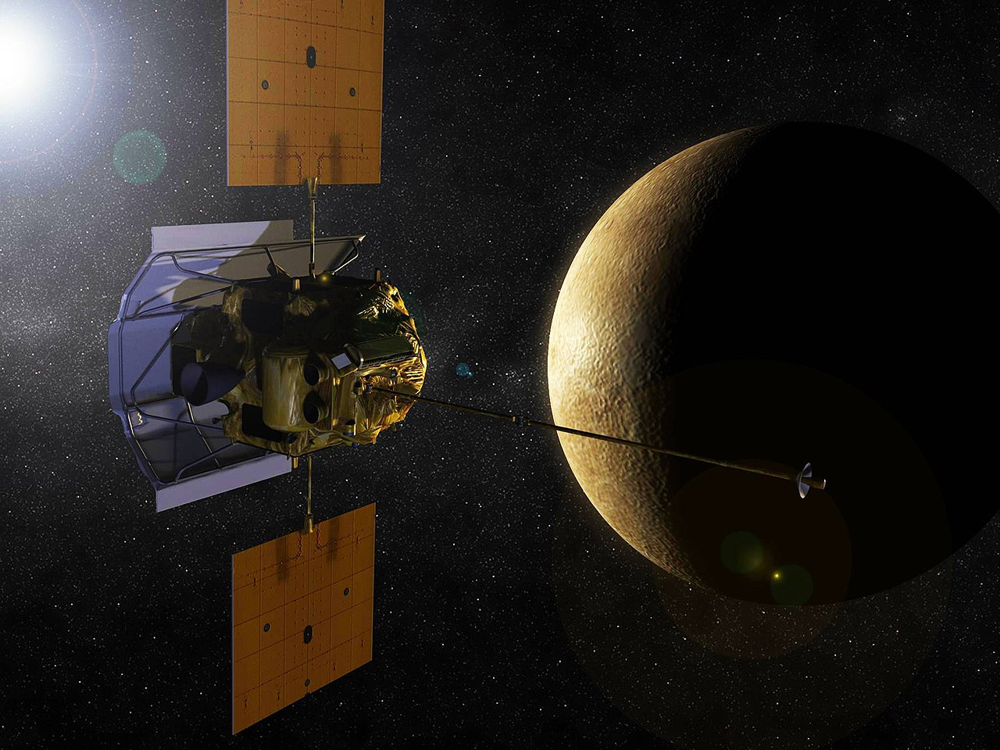

Венера
Венера - друга за віддаленістю від Сонця і шоста за розміром планета Сонячної системи, поряд з Меркурієм, Землею і Марсом, що належить до сімейства планет земної групи. Названа на честь давньоримської богині кохання Венери. По ряду характеристик - наприклад, за масою та розмірами - Венера вважається "сестрою" Землі. Венеріанський рік становить 224,7 земної доби. Вона має найдовший період обертання навколо своєї осі (близько 243 земних діб, у середньому 243,0212 ± 0,00006 діб) серед усіх планет Сонячної системи та обертається у напрямку, протилежному до напряму обертання більшості планет.

Венера не має природних супутників. На земному небі Венера є третім за яскравістю світилом після Сонця та Місяця. Її яскравість досягає видимої зоряної величини −4,6m і є достатньою, щоб уночі відкидати помітні тіні. Зрідка Венера видно неозброєним оком і у світлу пору доби.
Астрономічні характеристики
Венера має щільну атмосферу, що складається більш ніж на 96% вуглекислого газу. Атмосферний тиск на поверхні планети в 92 рази більший, ніж на поверхні Землі, і приблизно дорівнює тиску води на глибині 900 метрів. Через високий тиск вуглекислий газ у приповерхневій частині атмосфери за агрегатним станом є вже не газом, а надкритичною рідиною, тому ця частина атмосфери є «напіврідкий-напівгазоподібний» океан із надкритичного вуглекислого газу. Середня температура поверхні Венери - 735 К (462 ° C), що робить її гарячою планетою в Сонячній системі, незважаючи на те, що Меркурій знаходиться ближче до Сонця. Венера вкрита непрозорим шаром хмар із сірчаної кислоти з високою здатністю, що відбиває, що закриває поверхню планети від прямої видимості. Висока температура поверхні зумовлена дією парникового ефекту.

Венера класифікується як землеподібна планета, і іноді її називають «сестрою Землі», тому що обидві планети схожі на розміри і склад. Однак умови на двох планетах дуже різняться. Атмосфера Венери, найщільніша серед землеподібних планет, складається з вуглекислого газу. Поверхня планети повністю приховують хмари сірчаної кислоти, непрозорі у світлі. Суперечки у тому, що перебуває під хмарністю Венери, тривали до ХХ століття. У той же час атмосфера Венери прозора для дециметрових радіохвиль, за допомогою яких згодом і було досліджено рельєф планети.
Атмосферний тиск на поверхні Венери у 92 рази більший, ніж на Землі. Детальне картографування поверхні Венери проводилося протягом останніх 22 років, зокрема проектом «Магеллан». Поверхня Венери має яскраві ознаки вулканічної діяльності, а атмосфера містить сірку. Є деякі ознаки того, що вулканічна діяльність на Венері продовжується і зараз. Напрочуд низька кількість ударних кратерів говорить на користь того, що поверхня Венери відносно молода: їй приблизно 500 мільйонів років. Тектоніки плит на Венері немає (ймовірно, тому, що її літосфера через відсутність води дуже в'язка і, отже, недостатньо рухлива), але є багато слідів менш масштабних тектонічних рухів.
Дослідження Венери
Як один з найбільш яскравих об'єктів у небі Венера стала важливим елементом у людській культурі. Як найближча до Землі планета Венера була головною метою для ранніх міжпланетних досліджень. Це також перша планета, околиці якої відвідав земний космічний апарат («Марінер-2» у 1962 році), і на поверхню якої було здійснено посадку («Венера-7» у 1970 році). Щільні хмари Венери унеможливлюють спостереження її поверхні у видимому світлі, тому докладні карти її поверхні з'явилися тільки після виходу в 1991 на околовенерианскую орбіту космічного апарату «Магеллан», що здійснив радіолокаційне дослідження поверхні Венери з високою роздільною здатністю. Існують проекти реалізації більш складних завдань на поверхні Венери, у тому числі з використанням планетоходів, але їм заважають важкі умови на поверхні Венери.
Найбільш докладну карту поверхні склав американський апарат «Магеллан», що зняв 98% поверхні планети. Картографування виявило на Венері великі височини. Найбільші з них - Земля Іштар і Земля Афродіти, порівняні за розмірами із земними материками. Ударних кратерів на Венері відносно небагато. Значна частина поверхні планети геологічно молода (близько 500 млн років). 90% поверхні планети покрито застиглою базальтовою лавою.
У 2009 році було опубліковано мапу південної півкулі Венери, складену за допомогою апарату «Венера-експрес». На основі даних цієї карти виникли гіпотези про наявність у минулому на Венері океанів води та сильну тектонічну активність.